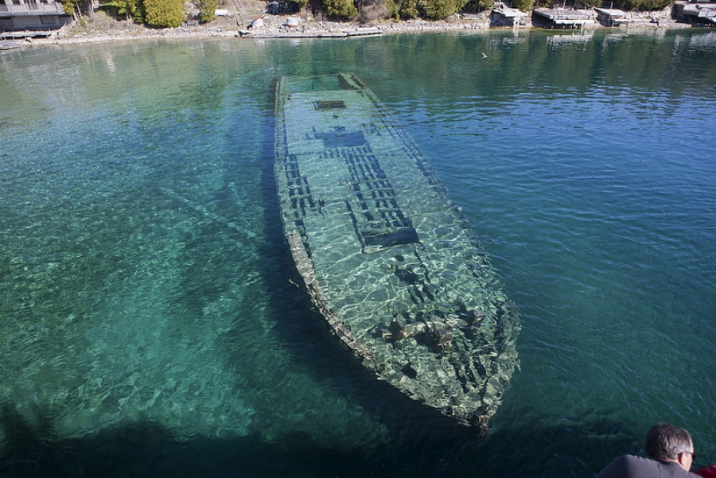

Creative Holidays..!!!Create your kind of holiday...
Tobermory
Fathom Five is Canada's first National Marine Park, with over 20 shipwrecks and 19 islands within it's boundarie.
The deep clear water and the numerous shipwrecks attract over 8,000 divers from around the world each year.
Tobermory is known as the Scuba Diving Capital of Canada.
Boat tours leave Tobermory several times each day to take visitors into Fathom Five National Marine Park,
visiting shipwrecks, lighthouses and rock formations unique to this area.
oat tours showcasing the many islands within Fathom Five National Marine park allow visitors to see and
explore the natural beauty and fascinating history of this area.
 Return to Home Page..
Return to Home Page..

Location:
Tobermory Chamber of Commerce
7420 Highway 6 | P.O. Box 250
Tobermory, ON, N0H 2R0 Canada
eMail: info@tobermory.org
Phone: (519) 596-2452